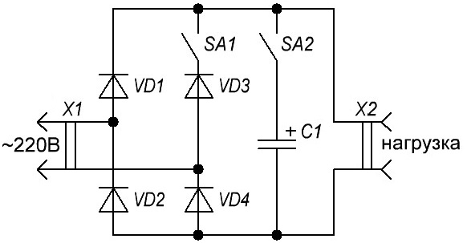

Приставка-регулятор к паяльнику
Подбирать оптимальную температуру нагрева жала паяльника можно с помощью приставки (рис. 1), позволяюшей получить на нагрузке четыре разных напряжения.

Рис. 1 - Схема приставки-регулятора к паяльнику
Таблица 1
| Обозначение | Наименование | Номинал | Количество | Примечание |
|---|---|---|---|---|
| C1 | Конденсатор электролитический | 40 мкФ / 350 В | 1 | |
| SA1, SA2 | Выключатель | 2 | ||
| VD1-VD4 | Диод выпрямительный | Д226Б | 4 |
Если оба выключателя разомкнуты, паяльник питается однополупериодным напряжением и температура нагрева жала минимальна.
Когда выключатель SA1 стоит в положении замкнутых контактов, температура жала возрастает, поскольку паяльник теперь питается двухполупериодным напряжением.
Если же, наоборот, контакты переключателя SA1 разомкнуты, а SA2 замкнуты, температура жала еще больше - ведь паяльник теперь питается пульсирующим напряжением от однополупериодного выпрямителя с конденсатором фильтра.
Для дальнейшего повышения температуры надо замкнуть контакты обоих выключателей - получится двухполупернодный выпрямитель с фильтрующим конденсатором.
Данные деталей приведены для паяльника мощностью 40 Вт. В случае применения паяльника другой мощности нужно изменить емкость конденсатора и подобрать диоды с другим значением выпрямленного тока.
Источники:
kazus.ru - ПРИСТАВКА К ПАЯЛЬНИКУ
Радио 11, 1981 г., с.52. Автор: А. ТЫЧИНИН